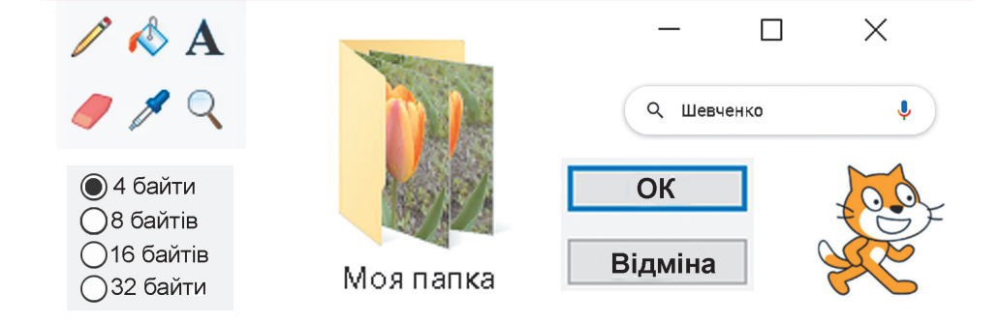
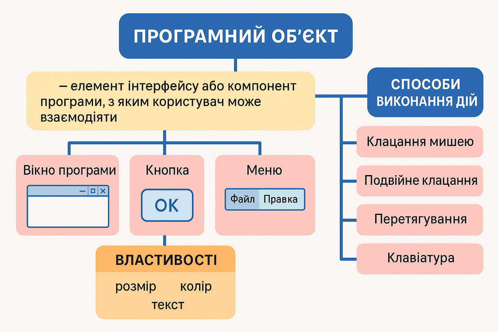

HUB 56 · 5 клас · Урок №2
Програмні об’єкти та дії над ними
Параметри програмних об’єктів.
Поміркуйте

- Які об’єкти є на фото?
- У яких програмах вони вам траплялися?
- Які дії можна над ними виконати?
Програмні об’єкти
Програмні об’єкти — це об’єкти, що використовуються в комп’ютерних програмах.
З кожним програмним об’єктом, крім набору властивостей, пов’язаний ще й набір дій, які можуть виконуватися над ним. Список деяких дій, які можна виконати над програмним об’єктом, як правило, відображається в контекстному меню об’єкта.

Способи виконання дій
У комп’ютерних програмах зазвичай можна використовувати кілька способів виконання одних і тих самих дій над програмним об’єктом з використанням:
- контекстного меню об’єкта;
- меню вікна програми;
- натискання певної клавіші або сполучення клавіш клавіатури.
Приклади програмних об’єктів
Розгляньте у таблиці приклади програмних об’єктів, їх властивостей і дій над ними.
| Програмне середовище | Програмний об’єкт | Приклади властивостей | Приклади дій |
|---|---|---|---|
| Графічний редактор | Прямокутник | Відстань від лівого краю аркуша, товщина лінії контуру, колір заливки, колір лінії контуру | Малювання прямокутника, заливка внутрішньої області, зменшення ширини, переміщення |
| Редактор презентацій | Заголовок слайда | Розміщення відносно верхнього краю, шрифт, колір символів, вирівнювання тексту | Створення, редагування, форматування |
| Браузер | Вікно програми | Розміщення на робочому столі, спосіб відображення, розмір, ім’я відкритої сторінки, кількість відкритих вкладок | Відкривання, закривання, згортання, змінення ширини, висоти та масштабу |
Змінення властивостей
У програмних середовищах для змінення значення певних властивостей об’єктів, як правило, потрібно послідовно виконати кілька дій.
Наприклад, щоб у програмі роботи з текстами змінити колір символів певного слова, слід виконати такий алгоритм:
- Виділити потрібне слово.
- Зробити поточною вкладку Основне.
- Відкрити список кнопки Колір шрифту у групі елементів Шрифт.
- Вибрати на Палітрі кольорів потрібний колір.